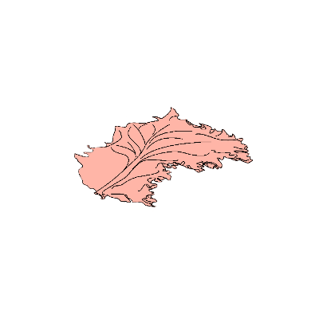
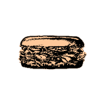
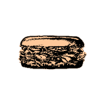

Structure
The arrangement of elements
An ideal sandwich consists of some number of ingredients fixed between two samples of a different ingredient. A sandwich's structure score does not reflect the ingredients themselves, only their arrangement as a whole. Take for example an aluminum composite panel - two thin aluminum sheets bonded to a non-aluminum core. This is structurally similar to a grilled cheese despite the fact that aluminum is inedible. More abstractly, sequences of events can have a high structural score when sampled over time. What is a day but a time of light between times of dark, a week but a time of labor between times of rest, and a life but one's experience between birth and death?


 
